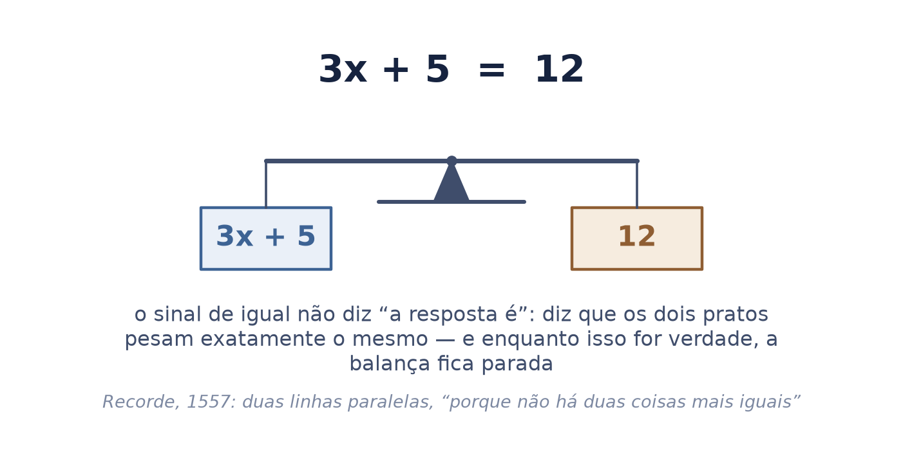
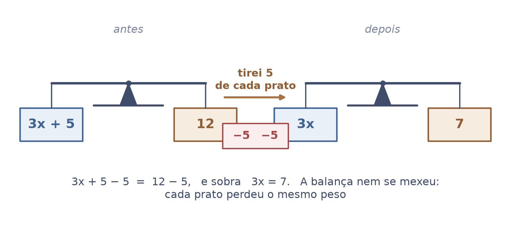
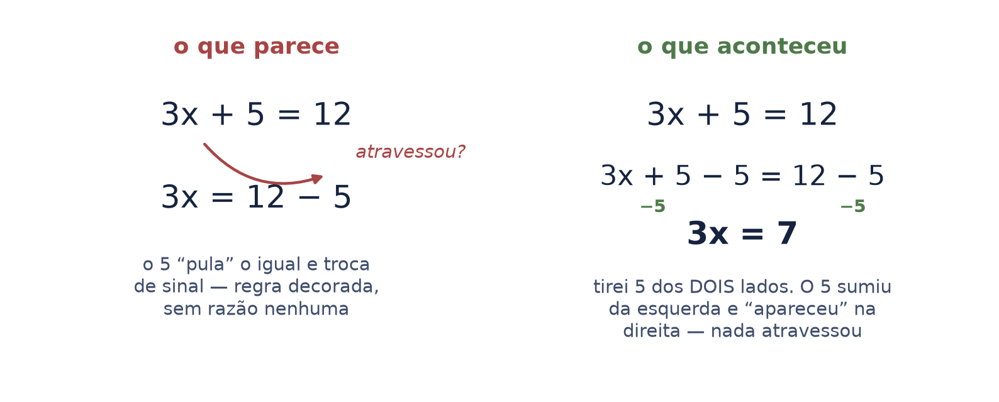
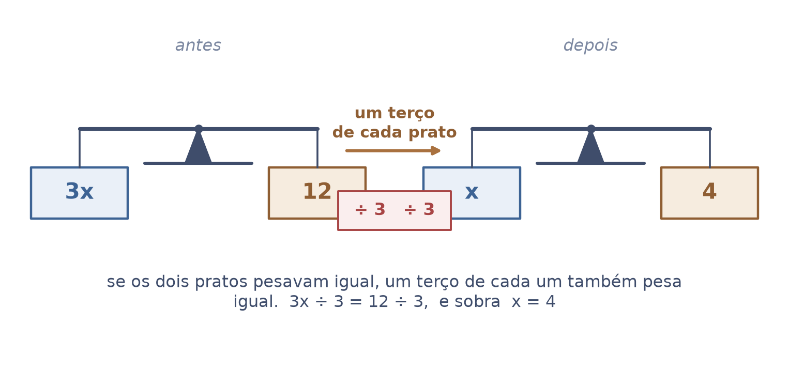
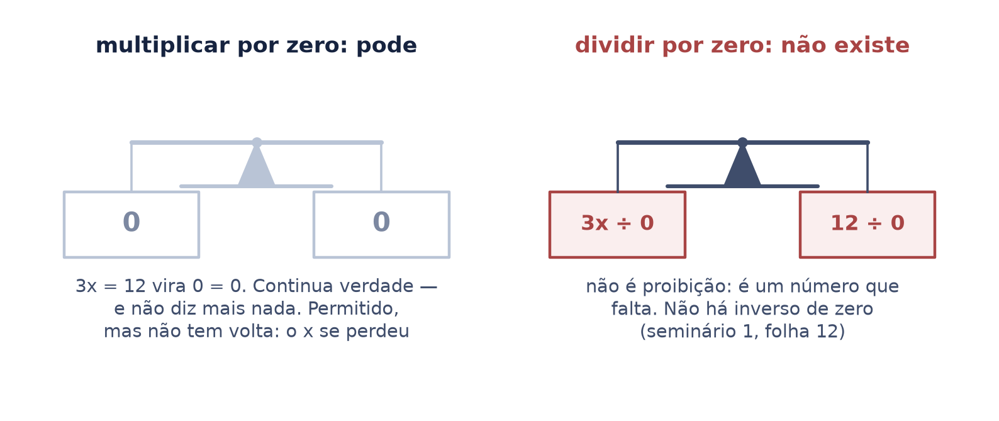
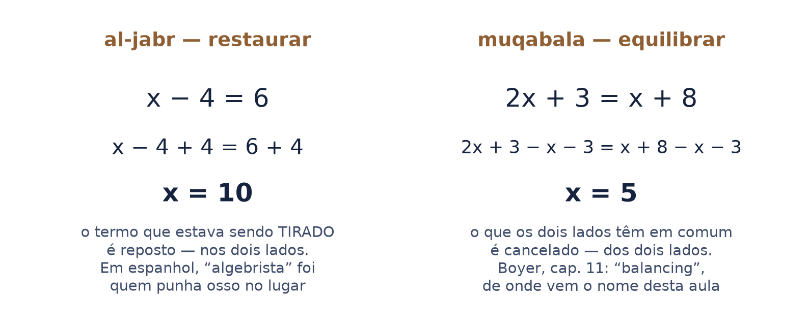
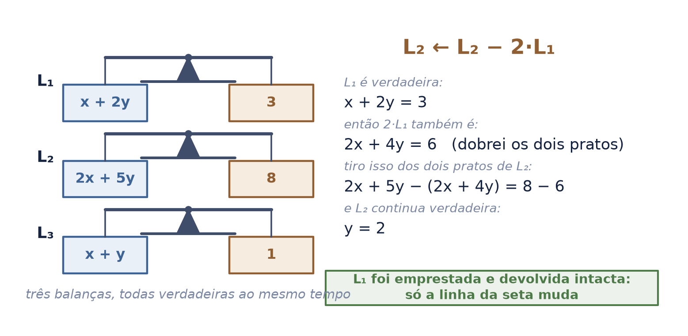
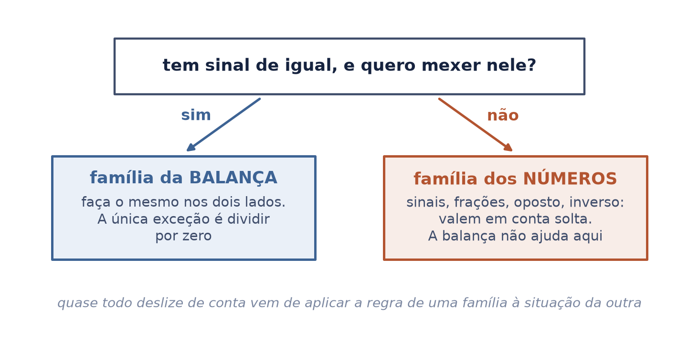
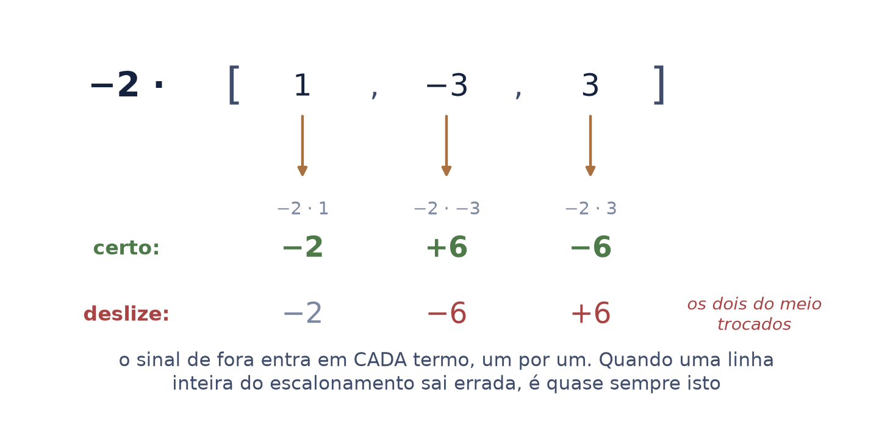
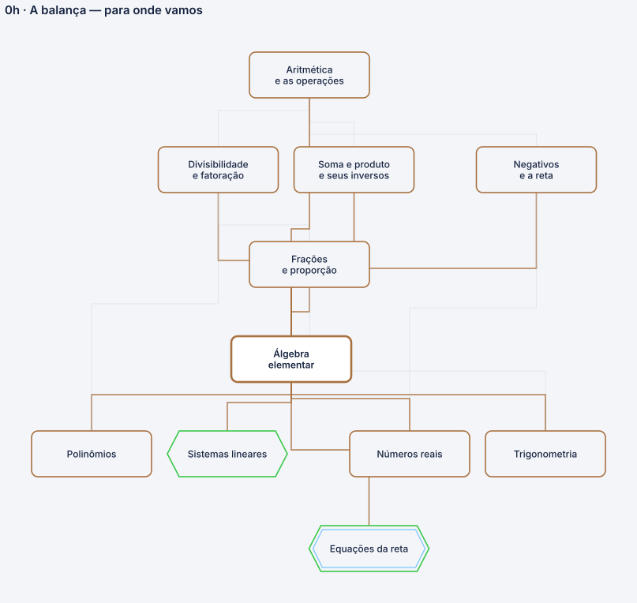

o sinal de igual diz que os dois pratos pesam o mesmo — e tudo o que se faz com uma equação é fazer o mesmo nos dois lados
A escola ensina a resolver equação por uma lista de regras: “passa para o outro lado e troca o sinal”, “o que está multiplicando passa dividindo”. As regras funcionam, e ninguém diz de onde vêm — por isso elas se confundem na hora da conta.
Esta aula troca a lista por uma regra só, escrita em letras, e mostra que cada item da lista é consequência dela. Os números entram como exemplo, nunca como a regra.
Autor · Mateus Felipe Alkimim Pereira
Coautora · Sara Catiele Nogueira Pereira
Orientador · Rosivaldo Antônio Gohnan
| \(a,\ b,\ c\) | letra minúscula inclinada — qualquer número, como no seminário 1. A regra escrita com elas vale para todos os números de uma vez |
| \(x,\ y\) | a mesma classe de letra, com outro papel: o valor que ainda não se sabe. O seminário 1 anunciou isto na folha 17 e não usou; aqui é o assunto |
| \(k,\ p,\ q\) | números que multiplicam — \(k\) multiplica a incógnita, \(p\) e \(q\) são os da Estação 4 |
| \(a = b\) | lê-se “\(a\) é igual a \(b\)” — os dois pratos pesam o mesmo |
| \(k \neq 0\) | lê-se “\(k\) é diferente de zero” |
| \(L_1,\ L_2\) | lê-se “linha um”, “linha dois” — o número embaixo é endereço, diz qual linha, nunca “quantas vezes” |
| \(L_2 \leftarrow L_2 - 2\,L_1\) | lê-se “a linha dois recebe a linha dois menos duas vezes a linha um”. A seta é o gesto do escalonamento; entra aqui porque é o símbolo que se lê no quadro |
Das duas operações e seus desfazedores (seminário 1), da regra dos sinais (seminário 3) e da fração reduzida e somada (seminário 4). Nada disso é ensinado de novo: é citado.
A equação como objeto, com uma regra só para mexer nela — e o porquê do escalonamento, que o arco da álgebra linear usa desde a primeira lista.
nenhuma seta de “implica” aparece nesta aula. Onde a lousa escreveria uma, o texto escreve “então”.
A calculadora ensinou a ler o sinal de igual como um botão: entra a conta, sai a resposta. Não é isso que ele diz. Em \(a = b\), o que está à esquerda e o que está à direita são o mesmo número, escrito de dois jeitos.
\(a = b\) — “\(a\) é igual a \(b\)”: os dois pratos pesam o mesmo
A imagem que carrega isso é a balança: o igual é o fiel parado no meio. Enquanto os dois pratos pesarem o mesmo, ela fica assim — e é exatamente essa condição que se quer preservar ao mexer numa equação.
O sinal nasceu como duas linhas paralelas, “porque não há duas coisas que possam ser mais iguais”. O desenho é a definição: dois traços do mesmo comprimento, um sobre o outro.

Se \(a = b\), então \(a\) e \(b\) continuam iguais depois de qualquer operação, desde que ela seja feita nos dois: somar o mesmo \(c\), tirar o mesmo \(c\), multiplicar pelo mesmo \(c\), dividir pelo mesmo \(c\).
“se \(a\) é igual a \(b\), então \(a\) mais \(c\) é igual a \(b\) mais \(c\), e \(a\) vezes \(c\) é igual a \(b\) vezes \(c\)”
Não há segunda regra. Tudo o que a escola lista como “técnicas de resolver equação” é esta frase, aplicada com um \(c\) bem escolhido. Tirar e dividir não precisam de linha própria: tirar é somar o oposto, dividir é multiplicar pelo inverso — seminário 1, folhas 8 e 10.
“É a mesma coisa você imaginar isso numa balança. Eu quero manter esse negócio do jeito que estava. Então, o que eu faço? O que eu fizer no primeiro membro, eu faço no segundo.”

Em \(a + b = c\), o \(b\) parece atravessar o sinal de igual e chegar do outro lado com o sinal trocado. Nada atravessou. O que aconteceu foi a única regra: tirei \(b\) dos dois pratos. Na esquerda, \(b - b\) some; na direita, sobra \(c - b\).
“\(a\) mais \(b\) é igual a \(c\); então \(a\) mais \(b\) menos \(b\) é igual a \(c\) menos \(b\); e sobra \(a\) igual a \(c\) menos \(b\)”
Com número: \(3x + 5 = 12\). Tiro 5 de cada prato e fica \(3x = 7\). O 5 “sumiu” da esquerda e “apareceu” na direita — é o efeito visível de um gesto feito dos dois lados.
“Dois lambdas. Isso, aí ele passa para o outro lado negativo.” — é o atalho de quem já sabe. Esta folha é o que o atalho abrevia.

Em \(a - b = c\), o prato da esquerda está leve demais em \(b\). Para desfazer isso não se tira nada: soma-se \(b\) — e, pela única regra, soma-se \(b\) nos dois pratos.
“\(a\) menos \(b\) é igual a \(c\); então \(a\) menos \(b\) mais \(b\) é igual a \(c\) mais \(b\); e sobra \(a\) igual a \(c\) mais \(b\)”
Com número: \(3x - \tfrac{5}{16} = 1\). Somo \(\tfrac{5}{16}\) aos dois pratos: \(3x = 1 + \tfrac{5}{16} = \tfrac{21}{16}\), e \(x = \tfrac{7}{16}\).
“três \(x\) menos cinco dezesseis avos é igual a um; então três \(x\) é igual a vinte e um dezesseis avos, e \(x\) é sete dezesseis avos”
o deslize é escrever \(3x = 1 - \tfrac{5}{16}\), que dá \(x = \tfrac{11}{48}\) — errado. Quem decora “passa e troca o sinal” troca o sinal certo uma vez só: o termo que estava subtraindo já é negativo, e o que se faz nos dois pratos é somar.
Antes de mexer, pergunte: o prato da esquerda está pesado demais ou leve demais? Pesado demais em \(b\): tira \(b\) dos dois. Leve demais em \(b\): põe \(b\) nos dois. A pergunta decide o sinal; a regra decorada só chuta.
Volte com a resposta ao começo: \(3 \cdot \tfrac{7}{16} - \tfrac{5}{16} = \tfrac{21}{16} - \tfrac{5}{16} = \tfrac{16}{16} = 1\). A balança fecha. Com \(\tfrac{11}{48}\), não fecha.
“três vezes sete dezesseis avos, menos cinco dezesseis avos, é dezesseis dezesseis avos, que é um”
Em \(k \cdot a = b\), a incógnita está multiplicada por \(k\). Para deixá-la sozinha, divido os dois pratos por \(k\) — se os dois pesavam igual, a \(k\)-ésima parte de cada um também pesa igual.
“\(k\) vezes \(a\) é igual a \(b\); então \(a\) é igual a \(b\) sobre \(k\), com \(k\) diferente de zero”
Com número: \(3x = 12\). Um terço de cada prato: \(x = 4\).
E o sinal de \(k\) vai junto na divisão — ele não fica para trás. Em \(-10y = \tfrac{5}{8}\), divido os dois pratos por \(-10\): \(y = \tfrac{5}{8} \div (-10) = -\tfrac{5}{80} = -\tfrac{1}{16}\).
“menos dez \(y\) é igual a cinco oitavos; então \(y\) é cinco oitavos dividido por menos dez, que é menos um dezesseis avos”
dividir por \(-10\) é multiplicar pelo inverso de \(-10\) (seminário 1, folha 10). Positivo vezes negativo dá negativo (seminário 3, folha 6). As duas aulas já estavam prontas; esta só as usa.

A regra diz “qualquer operação, nos dois pratos”. Zero entra nela como qualquer número: \(3x = 12\) vezes zero dos dois lados dá \(0 = 0\). Continua verdade. Só que não diz mais nada: o \(x\) se perdeu, e não há como voltar.
\(0 = 0\) — “zero é igual a zero”: verdadeiro, e vazio
Permitido e inútil não é a mesma coisa que proibido. A proibição de verdade é uma só, e ela não é regra de balança — é ausência de número. Dividir por \(k\) é multiplicar pelo inverso de \(k\), e o zero é o único número sem inverso. Não há pelo que multiplicar.
“‘Não se divide por zero’ deixa de ser uma regra que alguém decidiu, e vira uma ausência: não há proibição nenhuma, há um número faltando.”
é por isso que a folha anterior escreveu \(k \neq 0\) ao lado da regra. Não é cautela de professor: é o único \(k\) para o qual a operação “dividir os dois pratos” não tem o que fazer.

No século IX, al-Khwarizmi escreveu um livro sobre resolver equações. O título era al-jabr wa’l muqabalah, e a primeira palavra virou o nome da matéria inteira.
al-jabr, “restaurar”: repor um termo que estava sendo tirado — é a Estação 2, folha 6, quando o termo que subtraía volta somando. muqabala, “equilibrar”: cancelar o que os dois lados têm em comum — é tirar dos dois pratos o mesmo peso.
“‘al-jabr’ presumivelmente significava algo como restauração (…) e parece se referir à transposição de termos subtraídos para o outro lado da equação; ‘muqabalah’ (…) equilíbrio — isto é, o cancelamento de termos iguais em lados opostos.”
a matéria não se chama “regras para passar para o outro lado”. Chama-se, literalmente, restaurar e equilibrar — os dois gestos da balança. Em espanhol antigo, algebrista era quem punha osso quebrado no lugar.

Um sistema de equações é um punhado de balanças todas paradas ao mesmo tempo. O escalonamento mexe numa linha usando outra — e a pergunta certa é por que isso é permitido.
“a linha dois recebe a linha dois menos duas vezes a linha um”
Três passos, e cada um é a única regra. \(L_1\) é uma balança verdadeira. Então \(2\,L_1\) também é: dobrei os dois pratos. E se tiro \(2\,L_1\) dos dois pratos de \(L_2\), tirei o mesmo peso dos dois lados — \(L_2\) continua verdadeira.
A seta aponta só para \(L_2\) porque só ela mudou. \(L_1\) foi emprestada: usei o peso dela e devolvi intacta. O número da linha de cima que se usa para zerar os de baixo chama-se pivô.
com número: \(L_1\) é \(x + 2y = 3\) e \(L_2\) é \(2x + 5y = 8\). Dobro \(L_1\): \(2x + 4y = 6\). Tiro dos dois pratos de \(L_2\): sobra \(y = 2\). Voltando a \(L_1\), \(x = -1\).
“\(x\) mais dois \(y\) é igual a três; dois \(x\) mais cinco \(y\) é igual a oito”

Para zerar um número \(q\) de uma linha usando o pivô \(p\) da outra, sem fração, multiplica-se uma linha por \(p\) e a outra por \(q\), e subtrai-se:
“a linha \(i\) recebe \(p\) vezes a linha \(i\), menos \(q\) vezes a linha \(j\)”
É a única regra duas vezes: multipliquei os dois pratos de \(L_i\) por \(p\), e tirei dos dois pratos o mesmo \(q \cdot L_j\). O termo vira \(p \cdot q - q \cdot p\), que é zero.
Se \(p\) e \(q\) têm um divisor comum \(d\), divida os dois por \(d\) antes: \(\tfrac{p}{d}\) e \(\tfrac{q}{d}\) zeram o mesmo termo, com números menores. O maior \(d\) possível é o máximo divisor comum — seminário 4, Estação 3.
com número: pivô \(10\), número a zerar \(22\). Ia multiplicar por 10 e por 22; o divisor comum é 2, então uso 5 e 11. Mesmo resultado, contas pela metade — e menos lugar para o deslize da folha seguinte.
“\(L_i\) recebe cinco vezes \(L_i\), menos onze vezes \(L_j\)”
Multiplicar \(L_i\) por \(p\) muda a escala da linha. Para resolver o sistema, tanto faz: a balança continua verdadeira. Há contas, mais adiante na série, em que essa escala precisa ser lembrada e devolvida — e a aula certa dirá quando.
Antes de multiplicar, olhe os dois números e pergunte: os dois cabem no mesmo divisor? Se sim, encolha. Se a resposta for “só no 1”, siga com eles como estão.
Tudo até aqui foi da família da balança: vale quando existe um sinal de igual e se quer mexer nele. Há uma segunda família, e a balança não ajuda nela: as regras sobre os números em si — sinais, oposto, inverso, frações. Valem numa conta solta, sem equação nenhuma no papel.
Quase todo deslize de conta vem de aplicar a regra de uma família à situação da outra: “passar para o outro lado” dentro de um produto, ou trocar o sinal de um termo porque “ele mudou de lado” quando não havia lado nenhum.
Tem sinal de igual, e quero mexer nele? Então é balança: faça o mesmo nos dois lados. É conta solta, com sinal ou fração? Então é regra de número — e as duas folhas seguintes são o resumo dela, em letras.

Quatro regras, todas do seminário 1 (folhas 8 e 19) e do seminário 3 (folha 6). Aqui só o resumo, em letras, com um número embaixo de cada.
| \((-a)\cdot(-b) = a \cdot b\) | “menos \(a\) vezes menos \(b\) é \(a\) vezes \(b\)” — \((-2)\cdot(-3) = 6\) |
| \((-a)\cdot b = -(a \cdot b)\) | “menos \(a\) vezes \(b\) é menos \(a\) vezes \(b\)” — \((-2)\cdot 3 = -6\) |
| \(-(a + b) = -a - b\) | “menos, abre parêntese, \(a\) mais \(b\), é menos \(a\) menos \(b\)” — o sinal de fora entra em cada termo |
| \(a - (-b) = a + b\) | “\(a\) menos, abre parêntese, menos \(b\), é \(a\) mais \(b\)” — \(30 - (-66) = 96\) |
a terceira é a que derruba linha inteira no escalonamento: \(-2 \cdot [\,1,\ -3,\ 3\,]\) é \([\,-2,\ 6,\ -6\,]\). O deslize dá \([\,-2,\ -6,\ 6\,]\) — os dois do meio trocados, porque o \(-2\) entrou no primeiro termo e “esqueceu” os outros.
“menos dois vezes a lista um, menos três, três, é a lista menos dois, seis, menos seis”

| \(c \cdot \dfrac{a}{b} = \dfrac{c \cdot a}{b}\) | “\(c\) vezes \(a\) sobre \(b\) é \(c\) vezes \(a\), sobre \(b\)” — inteiro vezes fração só mexe em cima: \(3 \cdot \tfrac{17}{8} = \tfrac{51}{8}\), não \(51\) |
| \(\dfrac{a}{b} \div c = \dfrac{a}{b \cdot c}\) | “\(a\) sobre \(b\), dividido por \(c\), é \(a\) sobre \(b\) vezes \(c\)” — dividir por inteiro mexe embaixo: \(\tfrac{5}{8} \div 10 = \tfrac{5}{80} = \tfrac{1}{16}\) |
| \(\dfrac{a}{b} \div \dfrac{c}{d} = \dfrac{a \cdot d}{b \cdot c}\) | “\(a\) sobre \(b\) dividido por \(c\) sobre \(d\) é \(a\) vezes \(d\), sobre \(b\) vezes \(c\)” — inverte a de baixo e multiplica; a regra anterior é o caso \(d = 1\) |
| \(\dfrac{a}{b} + \dfrac{c}{b} = \dfrac{a + c}{b}\) | “\(a\) sobre \(b\) mais \(c\) sobre \(b\) é \(a\) mais \(c\), sobre \(b\)” — fatias do mesmo tamanho: soma só em cima |
| \(\dfrac{a}{b} + \dfrac{c}{d} = \dfrac{a \cdot d + c \cdot b}{b \cdot d}\) | “\(a\) sobre \(b\) mais \(c\) sobre \(d\) é \(a\) vezes \(d\) mais \(c\) vezes \(b\), sobre \(b\) vezes \(d\)” — tamanhos diferentes não somam; o denominador comum menor é o mínimo múltiplo comum (seminário 4, folha 12) |
| \(n = \dfrac{n \cdot b}{b}\) | “\(n\) é \(n\) vezes \(b\), sobre \(b\)” — todo inteiro vira fração com o denominador que se precisar: \(1 + \tfrac{5}{16} = \tfrac{16}{16} + \tfrac{5}{16} = \tfrac{21}{16}\) |
nada aqui é novo: o inverso e a fração são o seminário 1 (folhas 10 e 11); reduzir e somar fração é o seminário 4 (folha 12). A novidade é a forma: a regra em letras, o número só como exemplo — para que a mesma linha sirva na próxima conta, com outros números.
| uma leitura | o sinal de igual é uma balança parada: os dois lados são o mesmo número |
| uma regra | o que se faz num prato, faz-se no outro — somar, tirar, multiplicar, dividir |
| três consequências | o termo que somava sai subtraindo; o que subtraía volta somando; o que multiplica sai dividindo — nada “atravessa” |
| uma exceção | dividir por zero, e ela não é regra: é o número que falta |
| um nome | álgebra é “restaurar e equilibrar” — as duas manobras, em árabe |
| uma aplicação | o escalonamento: cada linha é uma balança, e a linha emprestada volta intacta |
| uma triagem | tem sinal de igual? balança. Conta solta? regra de número |
Este nó da base — a letra no lugar do número — é consumido pela reta, pelos sistemas lineares, pelos polinômios, pela trigonometria e pelos reais: é por eles que ele chega aos dois troncos.

Abrimos com a lista da escola — passa para o outro lado, o que multiplica passa dividindo — e com a promessa de trocá-la por uma regra só. A regra coube numa linha: o mesmo nos dois pratos. Cada item da lista apareceu depois como consequência dela, e a única coisa proibida não era proibição: era um número que falta.
O que fica, para a próxima conta, é a pergunta de triagem. Antes de mexer, decidir de que família é a situação. É essa decisão — não a conta — que separa o deslize do acerto.
A desigualdade — o professor usa a mesma balança para o “menor ou igual”, mas ali multiplicar por negativo vira o sinal, e isso pede folha própria. O sistema inteiro, com suas três saídas possíveis. A equação do segundo grau, que al-Khwarizmi resolvia e esta aula não toca. E a escala da linha multiplicada, que uma conta adiante na série vai cobrar de volta.
e não ensina os sinais nem as frações: são dos seminários 1, 3 e 4. Aqui eles só foram postos em letras, lado a lado, para a triagem ter o que separar.